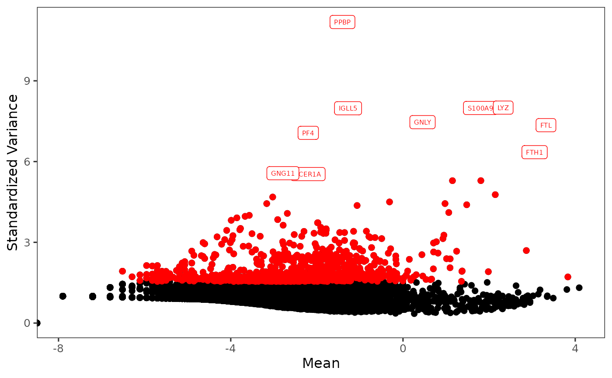

Feature Selection
Irzam Sarfraz
Source:vignettes/articles/feature_selection.Rmd
feature_selection.RmdIntroduction
singleCellTK offers a convenient way to compute and
select the most variable features that show the highest biological
variability to use them in the downstream analysis. Feature selection
methods available with the toolkit include vst,
mean.var.plot & dispersion from
Seurat [[1]][2][[3]][4] package and modelGeneVar from
Scran [5] package. Users can
additionally use visualization options and methods to visualize the top
variable genes interactively as well as from R console.
To view detailed instructions on how to use these methods, please select ‘Interactive Analysis’ for using feature selection in shiny application or ‘Console Analysis’ for using these methods on R console from the tabs below:
Workflow Guide
1. Select Feature Selection & Dimensionality Reduction tab from the top menu. This workflow guide assumes that the data as been previously uploaded, filtered and normalized before proceeding with this tab.

2. Select Feature Selection sub-tab (selected by default) to open up the feature selection user-interface.

3. The Feature Selection sub-tab is divided into three panels namely, a) Compute variability metric, b) Select number of variable features, and c) Plot.

The working of sections a, b and c are described below:
a) Compute variability metric

The Compute variability metric panel performs the
calculation of the variability of all the features present in the
dataset. Users need to select a method either from Seurat
(vst, mean.var.plot, dispersion)
or Scran (modelGeneVar) packages. A expression matrix must
be selected for the calculation. Note that Seurat - vst
method requires an raw count matrix, while other methods requires
normalized expression. After selection, click on Run to
start the calculation.
After computation, a scatter plot of all features will be shown in the Plot panel, where the axes are from the computed metrics. The variability metrics are stored as feature metadata variables, and could be used for ranking the features.
b) Select number of variable features

Once step (a) is done, subset of highly variable features can be selected for downstream analysis basing on available metrics. Users need to select a metric that has been calculated, enter the number of the top variable features to select, and name the subset. After confirming all the setting, click on Run to create the subset.
Upon the creation of a new subset, the Plot will be updated: the scatter plot will be based on the selected metric, all the selected highly variable features will be labeled in red, and a few top features will be highlighted with text labels.
c) Plot

From the dropdown panel at the top of Plot panel, users are allowed to:
- Update plot with different metrics, i.e. coordinates of points.
- Label features with different subsets. Note that a subset created from a certain method can be labeled on the coordinates from a different method, for comparison of the variability ranking.
- Adjust the number of top features to be highlighted with text labels.
- Change the feature ID type. This should be available in feature metadata. We recommend preset the feature display ID type when importing the data set, so that this setting applies globally through out the toolkit.
1. Compute statistics for the highly variable
features using the wrapper function runFeatureSelection()
as below:
sce <- runFeatureSelection(inSCE = sce, useAssay = "counts", method = "vst")In the function above, we recommend using a raw count matrix for
method "vst" from Seurat, or a normalized assay for method
"mean.var.plot", "dispersion" from Seurat and
"modelGeneVar" from Scran pacakge.
2. Get names of top genes using the
getTopHVG() function with specifying the same method which
was used for computation in the step 1:
topGenes <- getTopHVG(inSCE = sce, method = "vst", hvgNumber = 1000)Users can also visualize top genes using the
plotTopHVG() function with specifying the same method which
was used previously:
plotTopHVG(inSCE = sce, method = "vst", hvgNumber = 1000, labelsCount = 10)3. Set feature subset using the
setTopHVG() function with specifying the same method which
was used previously:
setTopHVG(inSCE = sce, method = "vst", hvgNumber = 1000, featureSubsetName = "HVG_vst1000")The name for the subset could be automatically generated by the function while can be specified by users. The subset will be used in downstream processing such as performing dimension reduction with the HVG subset.
Example
# Load singleCellTK & pbmc3k example data
library(singleCellTK)
sce <- importExampleData(dataset = "pbmc3k")
# Compute metrics with 'vst' feature selection method
sce <- runFeatureSelection(inSCE = sce, useAssay = "counts", method = "vst")
# Get the names of the top 1000 highly variable genes
topGenes <- getTopHVG(inSCE = sce, method = "vst", hvgNumber = 1000)
print(topGenes[1:10])## [1] "PPBP" "LYZ" "S100A9" "IGLL5" "GNLY" "FTL" "PF4" "FTH1"
## [9] "GNG11" "FCER1A"
# Visualize the top variable genes and label the first top 10 genes
plotTopHVG(inSCE = sce, method = "vst", hvgNumber = 1000, labelsCount = 10)
# Set subset of variable features
sce <- setTopHVG(inSCE = sce, method = "vst", hvgNumber = 1000, featureSubsetName = "HVG_vst1000")Individual Functions
While the runFeatureSelection() wrapper function can be
used to run all available feature selection methods, separate functions
are also available for all of the included methods. The following
functions can be used for specific feature selection methods:
vst, mean.var.plot or dispersion
from Seurat package:
sce <- runSeuratFindHVG(inSCE = sce, useAssay = "counts", method = "vst")The parameters to the above function include:
-
inSCE: The inputSingleCellExperimentobject -
useAssay: Specify the name of the assay to use for feature selection -
method: One of the options from"vst","mean.var.plot"or"dispersion" -
hvgNumber: The number of top variable features to subset ONLY for Seurat Curated Workflow. -
altExp: A logical value indicating if the input object is an altExperiment -
verbose: A logical value indicating if progress should be printed
modelGeneVar from Scran package:
sce <- runModelGeneVar(inSCE = sce, useAssay = "logcounts")The parameters to the above function include:
-
inSCE: The inputSingleCellExperimentobject -
useAssay: Specify the name of the assay to use for feature selection